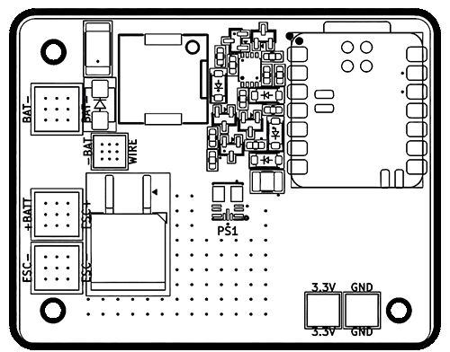
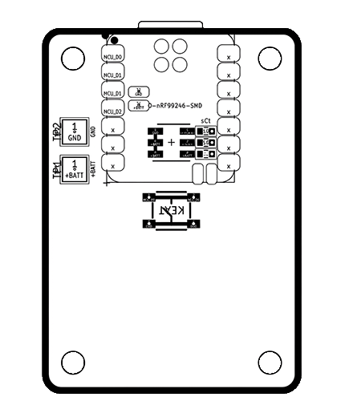

Companion Web App for Immogen
Web Serial is not available in this browser.Please use Chrome, Edge, or Opera.
Plug the fob in via USB-CSelect the serial port when prompted.
Plug the receiver in via USB-CSelect the serial port when prompted.
Unplug both devices. They are now paired and ready for deployment.


Connect the device via USB-C.
Double-tap the tiny reset button on the XIAO board rapidly.
You should see a new USB drive appear on your computer.